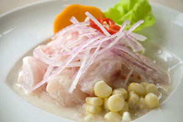

Su majestad "El Ceviche"
El boom de la gastronomia peruana jamas habra estallado sin un buen plato de cebiche. Su sabor exquisito lo han convertido en el buque insignia y el soberano de nuestra cocina. ¿Qué clase de magia sabrosa tiene el cebiche para convertirnos en sus fieles devotos?
No podemos negarlo: el cebiche ha dejado de ser un sencillo plato de comida para convertirse en un sentimiento, en una manera de vivir, en una forma de entender la vida. Con el cebiche lloramos nuestras penas, pagamos nuestras apuestas, celebramos nuestros triunfos, nos reencontramos con amigos y regresamos del extranjero para sentirnos en casa otra vez. El cebiche es el Perú convertido en pequeños trozos de pescado con sal, limon, cebolla y ajo. Cinco ingredientes que juntos han construido nuestra identidad nacional y el simbolo de lo que es Lima: la Capital Gastronomica de America.
La historia dice que nuestro plato insignia se disfrute desde tiempos inmemoriales, pero que recien se llama cebiche cuando los sabores se fusionaron con el alma. De la palabra se ocuparon historiadores, antropologos, linguistas y sociologos, y la unica conclusion a la que llegaron fue la misma: el cebiche proviene del mar. Y punto. Así de simple y fresco. Aunque, claro, no siempre se preparo igual. En los años cincuenta, por ejemplo, nuestras abuelas preparaban el cebiche dejando el pescado sumergido en zumo de limon durante cinco horas hasta casi cocinarse. Hoy, en cambio, gracias a la influencia nikkei, basta una suave caricia del limon para servirlo fresco en cuestion de minutos. Ahí radica su esencia.
Tips para preparar un buen ceviche
* El pescado, en cualquiera de sus especies, debe estar fresco, muy fresco.
* Es bueno echar cubitos de hielo y revolver con los ingredientes antes de servir. Esto ayuda a mantener frio al pescado y a disminuirle la acidez.
* El limon debe exprimirse solo hasta la mitad para evitar el sabor amargo y arruinar el plato.
Preparación:
Cortar el filete de mero en cubos. Luego colocar los cubos de mero en un bol frio y sazonar con sal. Añadir el ají limo, mezclar bien e incorporar el jugo de limon. Dejar reposar durante 30 segundos. Verter el caldo de pescado y agregar la cebolla. Revolver. Servir el cebiche y acompañarlo con el choclo, el camote y las rodajas de ají limo.
Variedades del ceviche:
- Cebiche mixto (con conchas, camarones, calamar, pulpo, cangrejo)
- Cebiche de conchas negras
- Cebiche de pejerrey
- Cebiche nikkei
- Cebiche de caracoles
Los datos:
- CEBICHERIA PIONERA. En los ochenta, la cebicheria Don Beta, ubicada en Miraflores, fue la primera en brindar el concepto de cebicheria moderna. Funcionaba de sol a sol (de 7 am a 10 pm) menos en Navidad. Era regentada por un brasileño y tenia una barra donde se exhibia el cebiche que se servia en un tazon para comerlo asopado y con cuchara. Quiza ahí se sirvio el primer cebiche preparado al momento.
- EN LA LENGUA DE LOS CRITICOS. Medios masivos de la talla del The New York Times, han alabado la exquisitez de nuestro cebiche. En un articulo titulado "La cocina peruana conquista el mundo", la prestigiosa revista alaba al cebiche: "Perú tiene una de las grandes cocinas del mundo más conocida por el cebiche, el pescado crudo marinado". Por otro lado, en el 2004 la revista The Economist considero al Perú entre las mejores doce cocinas del mundo. Nuestro cebiche fue uno de los motivos de tal galardon.
- EL CEBICHE MAS GRANDE DEL MUNDO. En noviembre de 2005, el Perú figura en el libro Guinness World Records al preparar el cebiche mas grande del mundo. Para este inusitado merito se emplearon 7.500 kg de carne de pescado fresco, 1.700 kg de cebolla, 2.000 kg de limon, 180 kg de sal y 180 kg de ají limo. Estos ingredientes, ya preparados, se vertieron en una fuente de acero inoxidable de 11 m de largo, 3 m de ancho y 0,36 cm de alto.